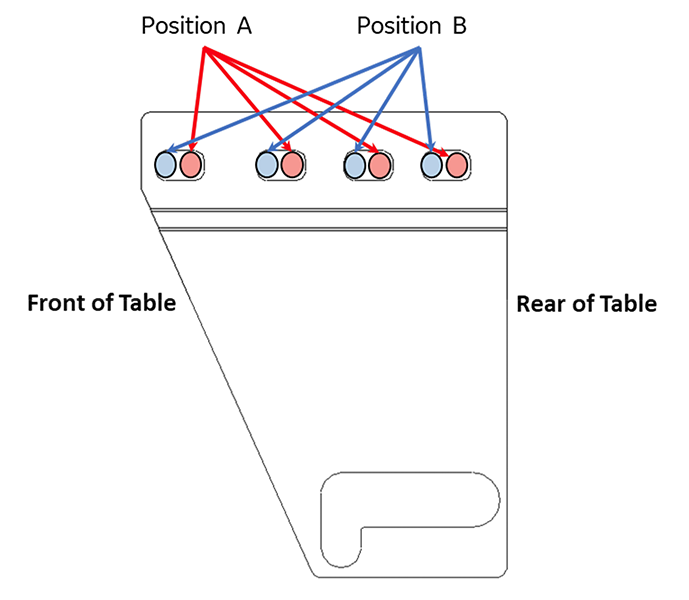
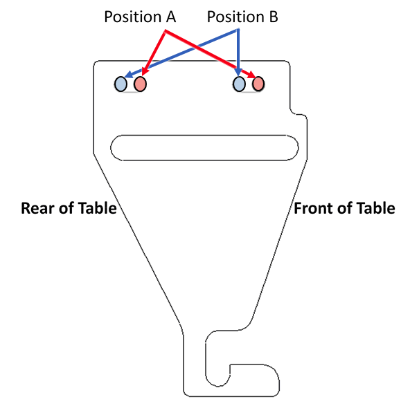
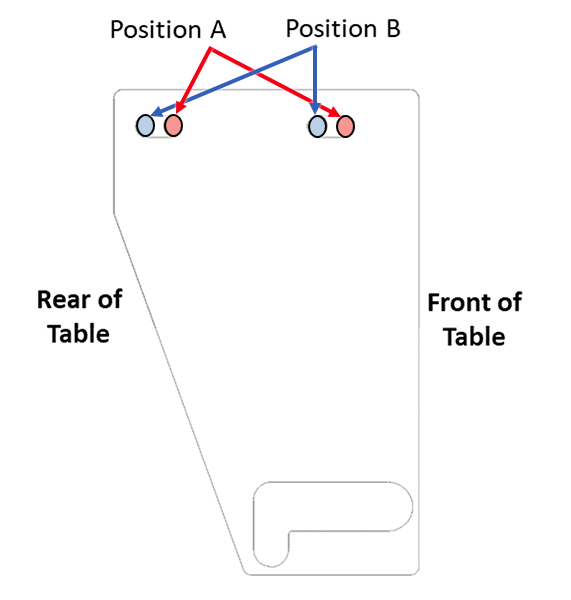

Finalizing the patient table braking system components replacement
Completes final steps for replacing patient table braking system components.
Procedure
- Make sure the nut portion of the caster pin is above the hook of the brake linkage plate. Adjust the caster to bring the nut above the hook if required.
- For all replaced parts, make sure there is sufficient contact area where the caster pin and the brake linkage plate hook engage. Adjust the caster to create contact area if required.
Figure 1. Caster pin engagement

1 Caster pin nut above the link plate 2 The plate may sag. Lightly push the plate down to lowest sag point. 3 Minimum of 2 mm below the plate at its lowest point - Raise the table and then raise the table lock safety bar for normal operation.
- Apply the wheel brake in the full lock position.
- Make sure that each wheel is locked by trying to rotate the table left and right from each end.No wheel should roll.note: Slight wheel movement from side-to-side on the rear wheels is allowed.
Ensure that the pedals stay engaged.
- Put the wheel brake in the free rotate position. Rotate the table left and right. Confirm that each caster swivels and rolls.
- Put the wheel brake in the steer lock position. Rotate the table left and right. Confirm that the rear wheels and the right front wheel swivel, while the left front wheel remains in a locked position.The left front wheel should remain oriented longitudinally along the table (it could rotate up to 180 degrees before locking). Make sure the pedals stay engaged.
- Repeat Step 4 through Step 7 on the other side of the table.
- If a caster fails the finalization test, consider adjusting that associated link from its current position to the opposite position (position A to position B, or position B to position A).
The three adjustable brake link plates are all initially installed in the factory at position A and are only moved toward position B if adjustments are required. Moving toward position B makes the caster pin reach full lock mode earlier, meaning less travel of the shaft linkage is required to engage the brakes.
In the case that the front left caster with the non-adjustable brake link plate is not working properly, check if any other brake link plates are at position B and are working properly. If so, consider moving those plates toward position A to allow for more shaft linkage travel, which should help with the front left caster.
Figure 2. Left rear brake link plate (view from top)

Figure 3. Right rear brake link plate (view from top)

Figure 4. Right front brake link plate (closed travel path) (view from top)

- Repeat Step 3 through Step 6 if any adjustments are made.
- Make sure the table operates correctly.
- Dock the table.
- Make sure the tables moves up and down.
- When the table is in fully raised position, make sure the table is level with the bridge.
- When table is in fully raised position, make sure the cradle can be advanced normally into the bore.
- Make sure the cradle operates correctly from the home position to end of travel on the bridge using enclosure In Fast and Out Fast buttons at the operator's console.